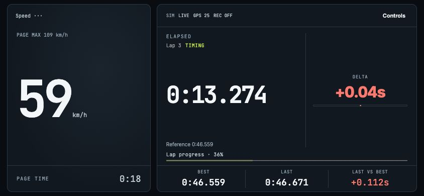
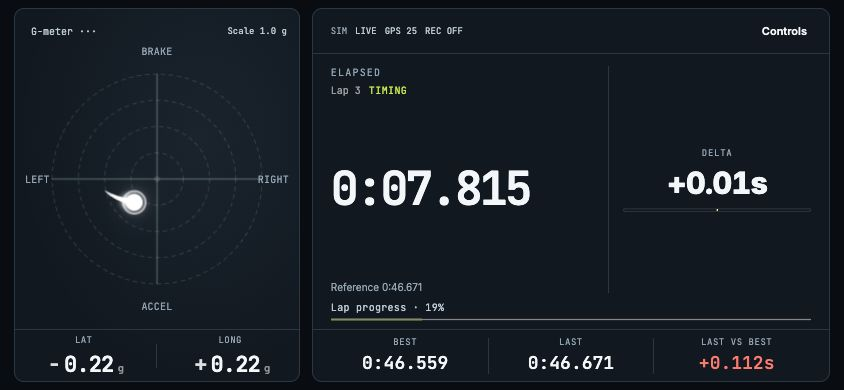
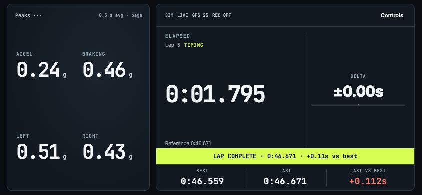
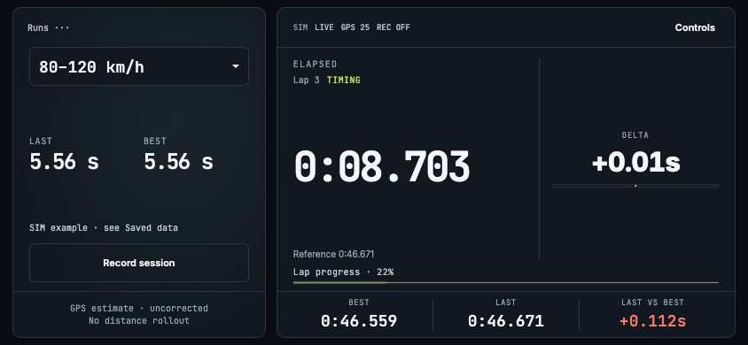
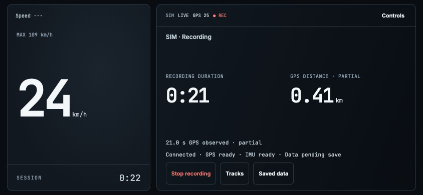
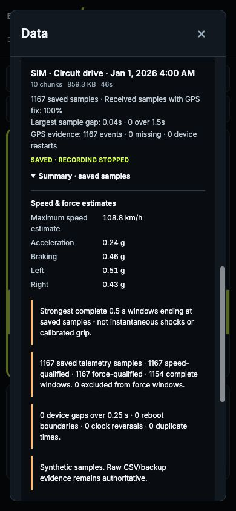
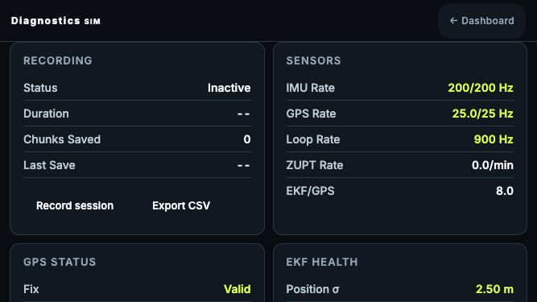
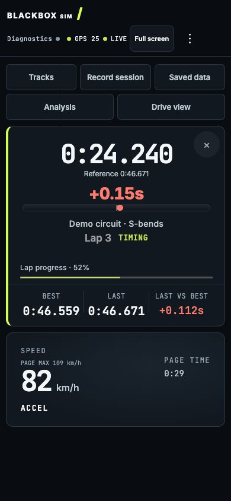

Time comes first.
Elapsed time stays prominent. Best and last laps give it context.
Build an open-source GPS lap timer and vehicle telemetry system on ESP32-C3. Turn your phone into a local dashboard for circuits, stages and ordinary drives. Record, review and keep your data.
One route, two laps, 5.223 seconds apart. Watch the recorded positions move around the route, then compare how speed changes through each lap. Press Play or drag the timeline to explore at your own pace.
Made from a real Blackbox recording: 1:21.135 and 1:15.912. This website replay uses relative coordinates and has no independent timing reference. The dashboard demo below uses simulated data.
Turn your phone sideways. Tap the instrument name to choose Speed, G-meter, Peaks or Runs, or swipe to switch. Timing stays in place with a track selected. Without one, Drive shows recording duration, partial GPS distance and data health. Controls brings back the toolbar when you need it.


A fixed scale keeps the trace comparable through a turn. Missing data clears the live readings; over-scale forces are marked.

Review the strongest half-second averages ending at received samples from this page session. Fresh moving samples qualify; isolated spikes do not become instant records.

Review 30–60 / 45–70 mph or 50–100 / 80–120 km/h runs. The menu follows your units; each named test keeps its own times, GPS evidence and rejected attempts. Timing rules and limits → · See the opened interval picker ↗

No track required. Start a recording, see duration and qualified GPS distance, then Stop to freeze the summary. Gaps stay explicit. Try the Drive panel → · How distance and recovery work →

Review a recording’s maximum qualified speed, strongest sample-ending half-second force estimates, data gaps and sample quality. Values stay tied to that recording. Read the summary rules →

Check sensor status and delivered update counters before setting off. These demo values are synthetic; validate actual rates with your own device readings and exported data. What the rates mean →
Park, name your captured route, then save it and arm timing. The naming panel keeps browser collection running while you decide. See portrait naming · See landscape naming. Actual interface with synthetic demo data. Recording limits and GPS evidence.
Elapsed time stays prominent. Best and last laps give it context.
Compare time at a matched position on your saved route. Negative is ahead; positive is behind. Detected gaps and ambiguous matches hide the estimate.
Route progress, connection and recording status share the screen. No digging through menus to find them.

Choose a circuit or stage. Start a recording. Bring back a saved session. Portrait keeps your setup controls close without losing the timing display.
See recording context ↗ · See a saved drive summary ↗ · Synthetic examples.
Captured from the actual dashboard with synthetic telemetry. The device bundles the same fonts for offline use. Rotate between portrait setup and the landscape cluster.
Lap time, reference delta, and speed at a glance. G-forces when you want more detail. No app installation or cloud account.
Time circuits and stages. Compare elapsed time against a saved reference.
Open optional Analysis to inspect lateral and longitudinal forces with a recent-motion trail.
See estimated acceleration, braking, and cornering states.
Runs in a modern browser on local Wi-Fi
GPS velocity and inertial measurements combined in Rust
MIT license, Rust firmware, modify freely
25 Hz GPS configuration. Interpolated circuit and stage timing. Local recordings you can restore. An instrument you can inspect and extend.
MIT-licensed firmware, readable timing logic, configurable sensors, and a local browser dashboard. No project subscription or cloud login.
RaceBox adds packaged GPS hardware and drag modes. RaceChrono Pro brings video and data analysis. Performance Box Touch has a dedicated display and performance tests. Blackbox gives you a DIY stack to shape.
25 Hz is the M9N configuration target; 200 Hz is configurable IMU output. Check delivered rates in Diagnostics. Reference-timed hardware accuracy is the next evidence to publish.
One controller. Two sensors. A status LED. Start with the wiring guide.
Controller + Wi-Fi
Acceleration + orientation
NEO-6M or NEO-M9N
Device status
GPS model and update rate must match your firmware build. Check wiring and compatibility
The build is part of the project. Follow the parts, wiring and mounting decisions, then keep a record of the installation that produced your data.
Identify the controller and sensor variants. Check the USB pin arrangement, wire the serial links, and establish fresh sensor data before closing the enclosure.
Keep the sensor parallel to the car floor, position the antenna and learn the car-forward direction. A sloping dash may need a rigid support. See the mounting diagrams.
A dedicated assembly journal for wiring, enclosure and installation photos as the build is documented. Each stage includes the details a fellow builder needs to reproduce it.
Wire the ESP32-C3, WT901, GPS, and LED. Choose firmware for your GPS model and connect over USB.
Keep the sensor stationary for startup calibration; use level ground for the initial baseline. Join its Wi-Fi, open the dashboard, and wait for a fresh GPS fix outdoors.
Start Record session for an ordinary drive. For circuit or stage timing, record a route, save and arm it while safely parked, then cross the start on a later pass.
In active development. Timing accuracy depends on GPS reception, update rate, and line geometry. Validate your setup before relying on lap results. Setup and timing guide
For drivers who want to understand their tools as well as their laps. Inspect the firmware, export your CSV recordings, and shape the project with us.
Try a simulated circuit sessionEvaluate it for circuit/stage timing, reference pace, local recordings, and editable firmware. Packaged systems may offer dedicated displays, autonomous storage, video/OBD analysis, and vendor support. Use the sourced capability comparison to choose, then measure your installed setup with the hardware checklist.
Yes. The interactive dashboard demo uses explicitly simulated telemetry. Try recording, saved data, lap feedback, and a connection interruption. Demo values do not demonstrate sensor accuracy. For a real recording, watch two laps and compare their GPS speed traces.
The firmware targets ESP32-C3 with a 4 MiB flash image. Published candidates distinguish NEO-6M at 5 Hz and NEO-M9N at 25 Hz. Update rate is not timing accuracy, and board wiring matters: GPIO18/19 currently conflict with native USB. Read the compatibility FAQ.
Not yet. Progress is an estimated fraction of reference-lap distance, not a pinpoint track position. Automatic turn callouts need validated position matching and repeatable corner identification. See the measurement limits.
The project requires neither. The device serves its dashboard over local Wi-Fi, and browser recordings can be exported as CSV. Hardware costs, assembly, and validation are your responsibility.
Published release via USB. Use Chrome on Android with a USB data cable, or desktop Chrome/Edge.
For an M9N receiver, select NEO-M9N / 25 Hz. Choose NEO-6M only for a 6M receiver. Release candidates contain newer fixes and still need hardware validation. Read release notes
Android: connect the ESP32-C3 directly with a data-capable USB cable (or USB OTG adapter), allow USB access, and keep Chrome open with the screen awake until installation finishes. Your phone must support USB host/OTG and power the board. Use mobile data or another internet connection to load the installer and firmware before joining Blackbox Wi-Fi. iPhone USB flashing is not supported.
Choose compatible ESP32-C3 hardware, check the wiring and get your first saved session.
DIY build and first-session guide →Capture NEO-M9N receiver epochs and distinguish sensor cadence from phone collection gaps.
NEO-M9N logging workflow →See what 25 Hz and interpolation mean, and which real measurements are still needed.
Timing accuracy explained →